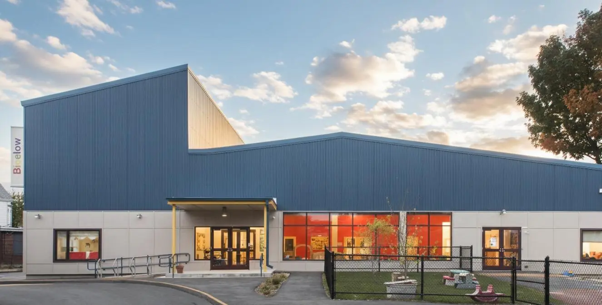
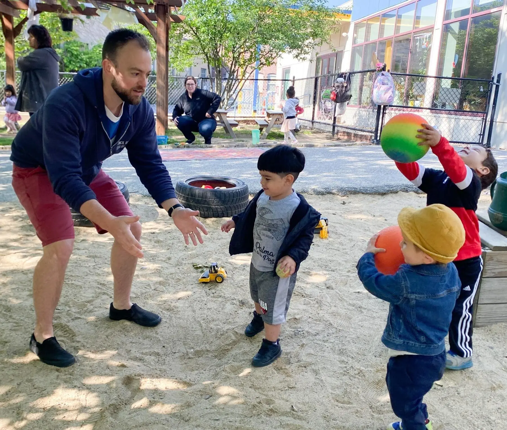
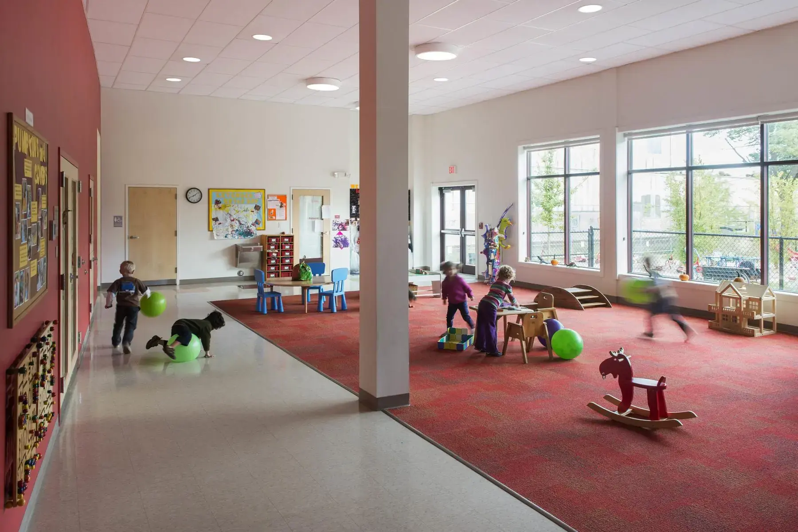
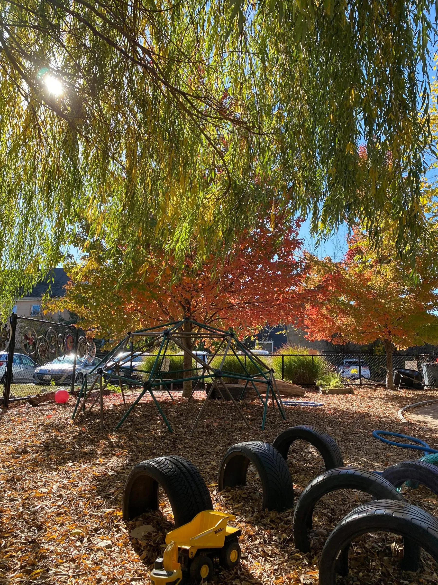

Welcome to
Bigelow
Bright classrooms, experienced educators, and a warm community environment designed to help every child feel confident and excited to explore. For children from 3 months to 5 years.
A school built with families — not just for them.
At Bigelow, families don't just drop off and pick up. They participate. Parents and guardians are invited to spend time in the classroom alongside teachers — reading, playing, exploring, and supporting the learning environment. For families whose schedules make regular classroom participation difficult, there are other meaningful ways to contribute.
Families also serve on working committees that help shape the life of the school — from curriculum and community events to finance and space. It's a model that builds connection, transparency, and shared ownership. Families often say it becomes the most meaningful part of their time here.
Learn how the cooperative model works →
A nurturing, low-ratio environment for our youngest learners. Warm routines, floor time, and gentle exploration built around each infant's pace.
As children begin to walk and talk, our toddler classroom supports growing independence with open-ended materials and responsive, attentive teachers.
A world designed for busy, curious two-year-olds — outdoor play, imaginative materials, and teachers who know how to follow a toddler's lead.
A rich, play-based preschool that builds social skills, literacy foundations, and a genuine love of learning — alongside a community of engaged families.
Light-filled rooms designed for movement and imagination.
Bigelow's classrooms are open, airy, and intentionally designed for young learners. Materials are accessible, spaces are flexible, and every corner invites exploration.
Children move easily between quiet reading areas, collaborative play, art, and hands-on discovery. Just outside, our private playground offers room to run, climb, imagine, and connect — all steps from the classroom door.
Explore our space →

Open 48 weeks a year. Outside nearly all of them.
Children play outside daily, weather permitting — in Bigelow's private playground, at nearby parks, and in the 5.5-acre woods on the grounds of the American Academy of Arts and Sciences.
Bigelow is open year-round with minimal breaks, so routines stay consistent and families don't scramble for coverage. Children can attend 2–5 days per week, with an extended day option until 5:30pm.
See schedules and tuition →A community families love to be part of.
We have been so impressed with the teacher quality and have enjoyed the community of Bigelow. The co-op aspect seemed potentially challenging when we first started but we have found that we highly value being involved in the management of the school through committees and have found the classroom time is the favorite part of our month!
— Jonathan B.
As a parent volunteer, I've had the rare opportunity to see the classroom from the inside. Watching my child learn alongside his now friends — and being part of that experience — is something I wouldn't trade.
— Nick D.
Every single teacher is loving, attentive, professional, and kind. The transition to daycare was scary, but Bigelow made us feel so supported, and I know our child was unbelievably loved there. There is a wonderful community feel, and the space is bright and clean. I can't say enough great things!
— Ariel T.
If you're looking for the best daycare in Somerville/Cambridge, Bigelow is it. The teachers are fantastic, and my child gets excited every day for the adventures and learning. He's grown so much here — and I credit that to Bigelow.
— Evan S.
After moving to the neighborhood, we enrolled our younger kiddo at Bigelow and have had a wonderful experience. Her teachers are incredibly creative and engaged, and the community of families has become one of the most meaningful parts of our time here.
— Jessica F.
We were drawn to the beautiful space and cooperative model, but have been blown away by the quality of care and attention our daughter receives. This is her first daycare experience, and we couldn't be happier.
— Dariel C.
Come see Bigelow in person.
Visit a classroom, meet our teachers, and get a feel for the community.